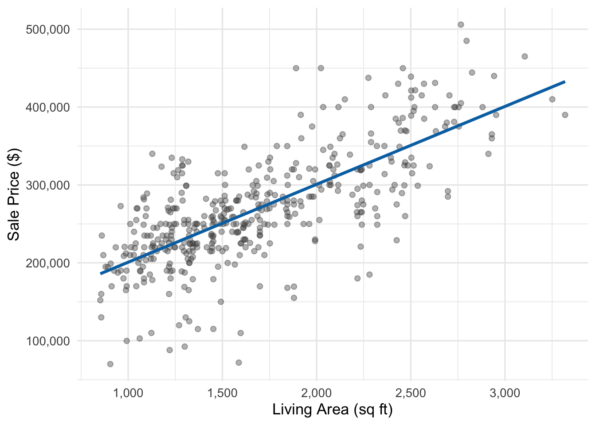
21 Simple Linear Regression
If we know the size of a house coming on the market, what is our best prediction for its ultimate sale price? If we compare the average sale prices for houses of different sizes, how do those averages change with size? How much predictive information does the size of the house carry? (That is, how much more accurate do our predictions tend to be if we know the size than if we know nothing about the house at all?)
These are all questions that can be answered using simple linear regression. In a simple linear regression model we predict one variable (price) from another (size) by finding the slope and intercept of the line that best fits the data. Provided the relationship is close to linear, this produces the backbone of a probability model that lets us make predictions, describe the uncertainty in our predictions for individual houses (through the probability distribution of our prediction errors), and quantify how much our errors decrease on average when we use size to predict prices.
Our running example uses data on home sales in Austin, Texas. Our dataset contains 438 homes from a single ZIP code in southeast Austin (78744), drawn from the same Austin housing data we have seen in earlier chapters. These are different homes from the three ZIP codes we plotted in Chapter 13, but size and price are about as closely related: the correlation is 0.73 here, compared to 0.77 there. We’ll focus initially on the relationship between living area (in square feet) and sale price. Below is a scatterplot of the data, with an initial linear fit overlaid:
When we plot price against area, we see a clear positive relationship: larger homes tend to sell for more money. Further, the relationship looks close to linear — that straight line goes right through the “bulk” of the data, and it would describe the relationship between size and price reasonably well (even though the points are spread out around the line).
We’ll talk about where the estimated line came from shortly; for now, let’s take a look at the estimated slope and intercept:
\[\widehat{y} = 100{,}771 + 100.01 \times \text{area}\]
Notation 21.1: Hats mean estimates
We use “hats” (the \(\widehat{~}\) symbol) to denote estimated or predicted values — so \(\hat y\) is the predicted price for a house of a given area, and \(\hat\beta_0\) and \(\hat\beta_1\) estimate the true intercept and slope, \(\beta_0\) and \(\beta_1\), of the regression model we define in Section 21.2. The Greek letters follow our convention from Chapter 8 for unknown parameters, and the hat marks an estimate computed from data, just like \(\hat p\) for a sample proportion.
Generically, when we use \(x\) to predict \(y\) we can write the prediction equation as
\[ \hat y = \hat\beta_0 + \hat\beta_1x \]
In these notes we will occasionally substitute plain-text labels for \(x\) (as we did above), \(y\), or both.
The equation for the line is determined by two parameter estimates, an intercept and a slope:
- \(\hat \beta_0 = 100{,}771\) is the estimated intercept, the predicted price when area equals zero
- \(\hat \beta_1 = 100.01\) is the estimated slope, the predicted change in price for each additional square foot of living area
21.1 Finding the line of best fit
How did we come up with the linear equation above? By finding the line that minimizes the average squared prediction errors over the observed dataset. These prediction errors (and the predictions from which they are computed) have special names when they are computed for the observed (\(y_i, x_i\)) pairs (house \(i\)’s sale price \(y_i\) and living area \(x_i\)): the predictions are known as fitted values, and the prediction errors are known as residuals. Let’s see a few examples:
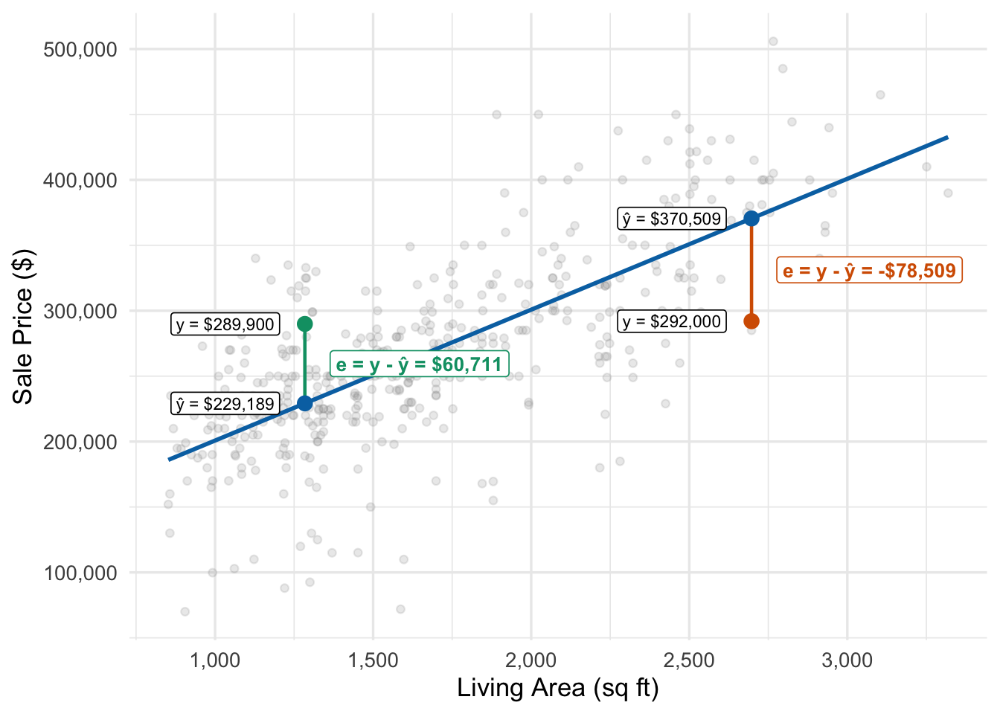
Definition 21.1 (Fitted values and residuals)
Definition 21.1
The fitted values are given by \[ \widehat{y}_i = \widehat{\beta}_0 + \widehat{\beta}_1 \times \text{area}_i \] and the residuals are the corresponding prediction errors — the difference between the actual and fitted values \[e_i = y_i - \widehat{y}_i = \text{observed price} - \text{predicted price}\]
where \(y_i\) is the actual sale price for house \(i\) and \(\widehat{y}_i = \widehat{\beta}_0 + \widehat{\beta}_1 \times \text{area}_i\) is the predicted price. The predicted value \(\widehat{y}_i\) is also called the fitted value. A positive residual means the house sold for more than predicted; a negative residual means it sold for less than predicted. These residuals contain useful information about aspects of the home that aren’t captured by living area alone.
21.1.1 How we choose the line: Least squares
Among all possible lines we could draw, which one is “best”? We choose the line that makes the average squared residual as small as possible. We call this ordinary least squares (OLS) regression. Just as variance measures the average squared distance from observations to their mean, the average squared residual measures the average squared distance from observations to the regression line. This is the same as the variance of the residuals, since by construction the average residual is always zero.
As such we can motivate OLS in two ways:
- It finds the line that minimizes the average squared residual — the average squared prediction errors, computed over the data we have.
- It finds the line that minimizes “left over” uncertainty about \(y\) when we use a line in \(x\) to predict it, as measured by the variance of the residuals
Technical detail 21.1: The least-squares criterion
Writing \(b_0\) and \(b_1\) for any intercept and slope we might try, we find the values that minimize the average squared prediction error (residual): \[ \frac{1}{n} \sum_{i=1}^{n} e_i^2 = \frac{1}{n}\sum_{i=1}^{n} (y_i - (b_0 + b_1x_i))^2\] We denote the values of \(b_0\) and \(b_1\) at the minimum by \(\hat \beta_0\) and \(\hat\beta_1\).
NoteProperties of the least-squares line
The least-squares line always has three properties:
- The residuals average to zero. Across the homes in our data, the line’s overpredictions and underpredictions cancel out, so it doesn’t tend to guess too high or too low.
- The line passes through the point \((\bar x, \bar y)\), so the predicted value at the average \(x\) is the average \(y\). The average home in our data has 1,687 sq ft of living area, and the line predicts about $269,500 for it, which is the average sale price.
- The slope equals the correlation times the ratio of the standard deviations: \[\hat\beta_1 = r\,\frac{s_y}{s_x}.\] Here \(r\) is the correlation between \(x\) and \(y\) from Chapter 13, and \(s_x\) and \(s_y\) are their standard deviations. A home one standard deviation larger than average has a predicted price \(r\) standard deviations above average. For the Austin homes, \(r\,s_y/s_x = 0.730 \times 72{,}263 / 527 \approx 100\) dollars per square foot, the slope of the fitted line.
Exercise 21.1: Understanding residuals
Consider a regression model predicting home prices from living area with equation: \[\widehat{\text{price}} = 50000 + 150 \times \text{area}\]
What is the predicted price for a 2,000 sq ft home?
If this home actually sold for $380,000, what is the residual?
Does this home sell for more or less than we expected based on its size? How do you know?
Solution
1. Predicted price: \[\widehat{\text{price}} = 50000 + 150 \times 2000 = \$350{,}000\]
2. Residual calculation: \[e = y - \hat{y} = 380{,}000 - 350{,}000 = \$30{,}000\]
3. Interpretation: The residual is positive, meaning this home sold for more than predicted—$30,000 above what the model expected given its size.
Exercise 21.2: Residuals in sales forecasting
A retail company fits a regression model to predict monthly sales (in thousands) based on advertising spend (in thousands): \[\widehat{\text{sales}} = 125 + 3.2 \times \text{advertising}\]
In March, the company spent $40,000 on advertising and achieved sales of $265,000. Calculate the fitted value and residual for March.
In April, the company spent $50,000 on advertising and achieved sales of $275,000. Calculate the fitted value and residual for April.
In which month did the company perform better relative to expectations? Explain your reasoning.
The company’s CFO is concerned about the negative residual in April. Does a negative residual necessarily indicate poor performance? Why or why not?
Solution
1. March fitted value and residual: \[\widehat{\text{sales}} = 125 + 3.2 \times 40 = 253 \text{ (thousands)}\] \[e = 265 - 253 = +12 \text{ thousand dollars}\]
2. April fitted value and residual: \[\widehat{\text{sales}} = 125 + 3.2 \times 50 = 285 \text{ (thousands)}\] \[e = 275 - 285 = -10 \text{ thousand dollars}\]
3. Better performance: March was better relative to expectations. Despite lower absolute sales, March exceeded its prediction by $12,000 while April fell short by $10,000. March generated more sales than expected given its advertising level.
4. Interpreting negative residuals: No, a negative residual doesn’t necessarily indicate poor performance. April still achieved $275,000 in sales, which is strong in absolute terms. The negative residual simply means sales were slightly below what the model predicted given the $50,000 advertising spend. This could reflect random variation, seasonal effects not captured by the model, or other factors beyond advertising. Because the residuals average to zero, negative residuals are a normal part of any fitted model: some months land below the line and some above it, due to natural variation and factors not included in our current model.
21.2 The linear regression model
The fitted line describes the data we have. But we often want to make broader inferences—to understand the underlying relationship between price and area in the population of all homes, not just our sample. For this we need a more complete probability model.
Definition 21.2 (The simple linear regression model)
Definition 21.2
The simple linear regression model assumes:
\[y_i = \beta_0 + \beta_1 x_i + \epsilon_i\]
where:
- \(y_i\) is the observed response (price) for observation \(i\)
- \(x_i\) is the explanatory variable (area) for observation \(i\)
- \(\beta_0\) is the true population intercept
- \(\beta_1\) is the true population slope
- \(\epsilon_i\) is a random error term
We assume the error terms \(\epsilon_i\) are:
- Normally distributed with mean zero and constant variance \(\sigma^2\): \(\epsilon_i \sim N(0, \sigma^2)\)
- Independent across observations
Taken together, these modeling assumptions say that the sale prices of all houses of a given size follow a normal distribution centered at the corresponding point on the true regression line, with the same standard deviation \(\sigma\) at every size; the figure below illustrates this graphically:
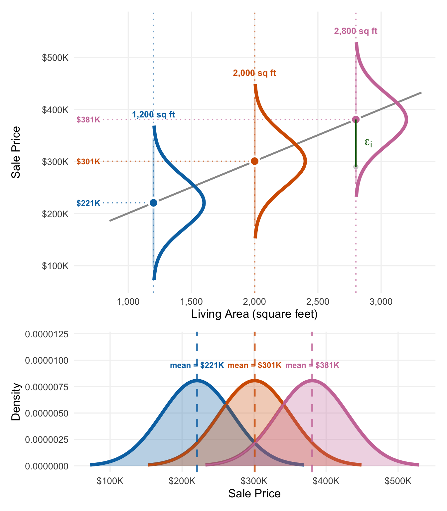
The gray dot is a single house with size = 2800 square feet; the vertical green bar annotated \(\epsilon_i\) is the difference between the actual sale price and the predicted sale price ($381K). These deviations from the line follow a \(N(0, \sigma^2)\) distribution according to our modeling assumptions.
Of course we need to estimate these quantities from a given sample; we won’t ever know the true regression line. We get to see our estimated regression line, with slope and intercept as in the previous section. We can think of the residual for an observation as an estimate of its true prediction error (since it’s the difference between the observed and predicted value using the estimated line, instead of the true line). The figure below illustrates this graphically for a subset of our actual sample:
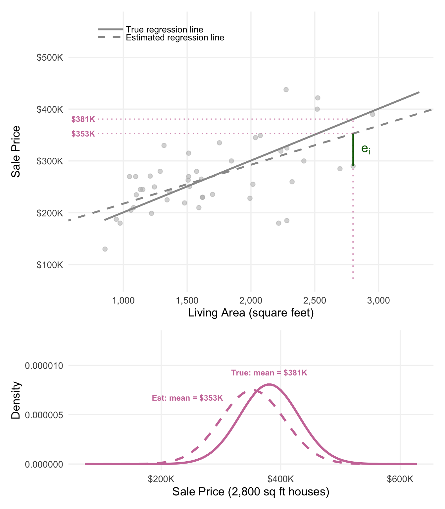
In the top panel, the same 2,800 sq ft house from the last plot is shown along with its residual \(e_i\) — we can think of this residual as an estimate of the true error \(\epsilon_i\) shown in the previous plot. Since we know that \(\sigma\) is the standard deviation of the true error terms \(\epsilon_i\) it would make sense to estimate \(\sigma\) by the sample standard deviation of the residuals \(e_i\), which we call \(s_e\). That’s how we get the spread of the estimated normal distribution in the bottom panel, which is just a little larger than the truth.
Note that the big difference in means for the true and estimated normal distributions in the bottom panel is because we are making predictions at the edge of our observed data, where the difference between the two lines is large. (This choice was deliberate, so it would be easier to see the differences in the plots.) For 1,200–2,200 sq ft houses, the means would be much closer. The difference in spread (standard deviation) would stay the same, however.
21.2.1 The regression table
Statistical software reports the fitted line, along with several related quantities, in a regression table. Table 21.1 gives the table for our housing data.
Term | Estimate | Std. error | 95% CI | t | p-value |
|---|---|---|---|---|---|
Intercept | 100,770.58 | 7,923.45 | [85,197.68, 116,343.48] | 12.72 | <0.001 |
Living area (sq ft) | 100.01 | 4.48 | [91.20, 108.83] | 22.30 | <0.001 |
Residual standard error | 49,443.28 | ||||
R² | 0.533 | ||||
Adjusted R² | 0.532 | ||||
n | 438 |
We’re familiar with some of these numbers from the discussion above:
- Estimates of the intercept and slope along with standard errors (the Estimate and Std. error columns). Just like a sample mean, sample proportion, and difference between sample means/proportions have their own standard errors, so too do our estimated slope and intercept — and we interpret them the same way.
- 95% confidence intervals (the set of plausible values) for the intercept and slope (the 95% CI column). Software makes some small adjustments for accuracy that are tedious by hand, so these intervals differ slightly from the estimate plus or minus two standard errors.
- The residual standard error \(s_e\) — which is (approximately) the sample standard deviation of the residuals — is our estimate of \(\sigma\) (the standard deviation of prediction errors under the model).
- t-statistics and p-values for testing the null hypotheses that \(\beta_0=0\) and \(\beta_1=0\).
- \(R^2\) and adjusted \(R^2\) will be introduced in Section 21.3.3.3.
21.3 Applications of linear regression
Linear regression is a versatile tool for making predictions and understanding relationships and trends. In this section we collect the most common uses of linear regression; any particular business application will likely involve more than one of these.
21.3.1 Use 1: Summarizing trends
One of the most common uses of linear regression is to summarize the relationship between two variables using the slope and intercept. These parameters tell us about the nature of the linear association between the two variables.
21.3.1.1 Interpreting the slope
The slope \(\hat\beta_1 = 100.01\) tells us that for each additional square foot of living area, we expect house prices to increase by about $100.01 on average. Another way to say this is that if we compared two houses which differ in size by one square foot, the larger house would have a predicted sale price that is $100.01 higher.
We can visualize this directly on the scatterplot:
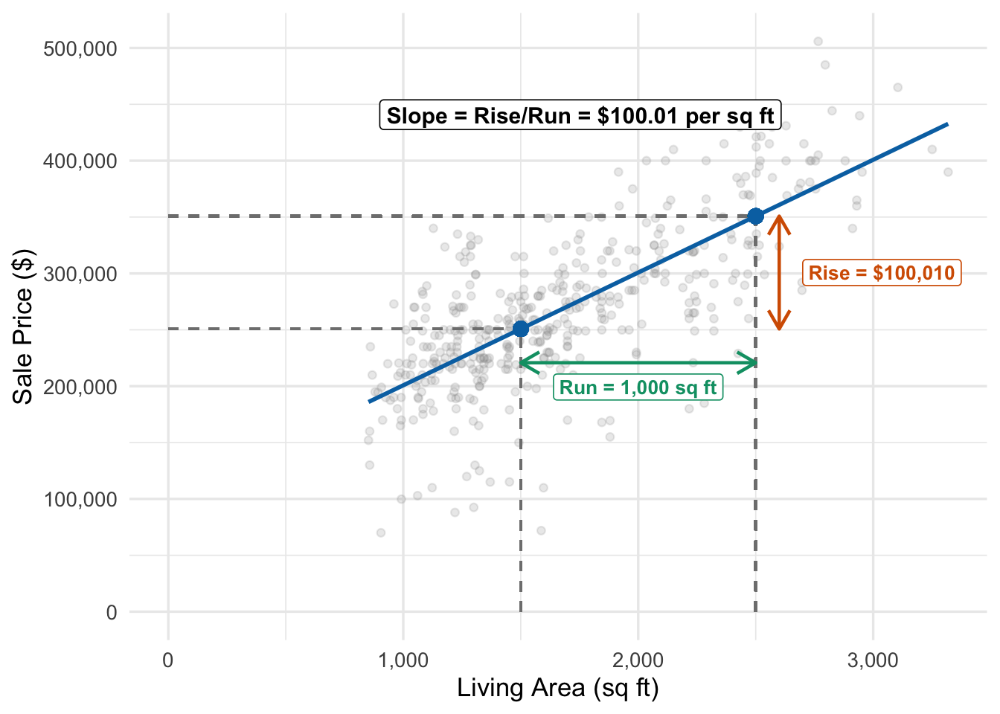
The slope is the “rise over run”—the change in predicted price divided by the change in area. Comparing a 1,500 sq ft home to a 2,500 sq ft home (an increase of 1,000 sq ft), we predict the price will increase by $100,010.
Tip 21.1: Interpreting the slope
Here are three correct, equivalent ways to interpret the slope in the Austin house prices example:
- For each additional square foot, the predicted (or expected) price increases by about $100.01
- This describes how the value on the line changes as we move along the x-axis
- If we compared two houses which differ in size by one square foot, the larger house would have a predicted (or expected) sale price that is $100.01 higher.
- This is the same statement, just in more intuitive language: We’re comparing predictions (points on the line) for two houses with areas that differ by one square foot
- If we compared many houses which differ in size by one square foot, on average the larger houses would sell for $100.01 more.
- Remember from the previous section that our model says that the true or population distribution of all sale prices of all houses of a given size can be described by a normal distribution with a mean given by the corresponding point on the line. So we can think of the predicted value for any given size as the average sale price among all houses of that size. So the increase in the value on the line when we move up one square foot on the x-axis tells us the difference in average sale prices for houses of (say) 2,001 versus 2,000 square feet.
In each case we could replace the one square foot difference by a 1,000 square foot difference (for example) by substituting \(1000\times 100.01\) for \(100.01\), as in the figure above.
21.3.1.2 Interpreting the intercept
The intercept \(\hat\beta_0 = 100{,}771\) is the predicted price when area equals zero. Let’s visualize this:
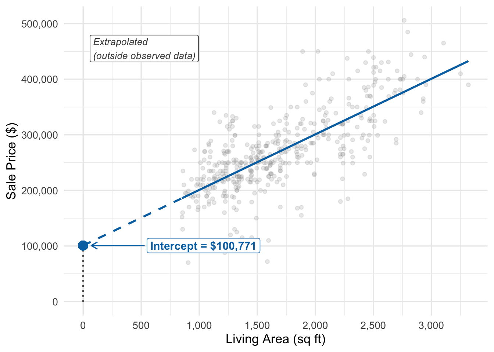
In this example, the intercept has no practical interpretation. We can’t have a house with zero square feet, so predicting a price of $100,771 for such a house is meaningless. You might object to this — an empty lot might correspond to a “house with zero square feet”. But even if we grant this, the smallest house we observe is about 850 sq ft, and we should take care trying to extrapolate all the way down to zero.
This is a common situation: in this case, the intercept is simply a mathematical anchor point for the line that gives us the best predictions for the houses we actually observe. However, the intercept can be meaningful when zero is a plausible value for the explanatory variable. Hamermesh and Parker collected student evaluations for 463 UT Austin course sections from 2000–2002 (Hamermesh and Parker 2005). Along with each section’s average evaluation (on a 1–5 scale), the data include a beauty rating for the instructor: the average of six students’ ratings of the instructor’s photo, shifted so that 0 is the average rating. Figure 21.7 plots evaluations against beauty.
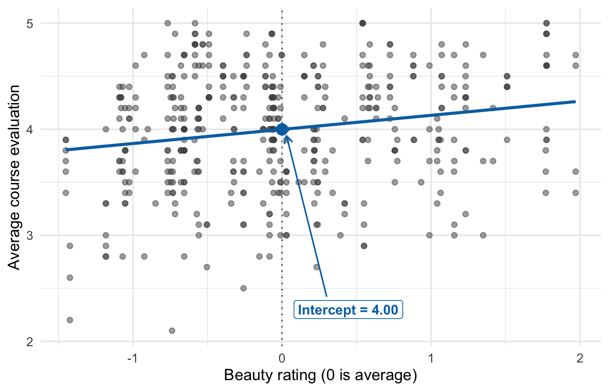
The fitted line is \(\widehat{\text{eval}} = 4.00 + 0.13 \times \text{beauty}\). Here a beauty rating of zero is the average rating, right in the middle of the data, so the intercept of 4.00 is the predicted evaluation for an instructor of average beauty. Because the least-squares line passes through \((\bar x, \bar y)\) and beauty has mean zero, the intercept equals the average evaluation. The slope of 0.13 tells us that instructors whose beauty ratings differ by one point have predicted evaluations that differ by about 0.13 points.
21.3.1.3 Centering and/or scaling the variables
The interpretation of both the intercept and slope can be made more meaningful by centering and/or scaling the \(X\) variable. For example, if we centered the area variable by subtracting the mean area from each observation, then the intercept would represent the predicted price for a house of average size. Alternatively, if we “relocated” the area variable by subtracting (for example) 1,500 from each observed area, then the intercept would represent the predicted price for a 1,500 sq ft house. In either case, the slope would still represent the change in predicted price for a one square foot increase in area, but the intercept would now have a more meaningful interpretation.
We could also scale the original area variable to get a slope in different units. For example, if we divided area by 100, then the slope would represent the change in predicted price for each 100 square foot increase in area. In this case, the slope would be $10,001 per 100 sq ft, and the intercept would represent the predicted price for a house with zero hundred square feet (i.e., zero square feet).
Finally, we can also scale the outcome variable (price) to get a slope in more convenient units. For example, if we divided price by 1,000, then the slope would represent the change in predicted price (in thousands of dollars) for each one square foot increase in area. In this case, the slope would be \(0.1\) thousand dollars per square foot, and the intercept would represent the predicted price (in thousands of dollars) for a house with zero square feet.
21.3.1.4 Statistical inference: Confidence intervals and hypothesis tests
Our estimates \(\hat\beta_0\) and \(\hat\beta_1\) are based on a sample of 438 homes. If we had a different sample due to random variation, we’d get somewhat different estimates. To quantify this uncertainty, we can construct confidence intervals and conduct hypothesis tests, just like we did for means, proportions, and differences. The validity of these intervals and tests depends on how well the probability model in Section 21.2 fits the data; model checking will be covered in later chapters.
A 95% confidence interval for the slope is (91.2, 108.83). This is the set of plausible values for the true slope; the ones consistent with the data we observed. In other words, across repeated samples, 95% of such intervals would contain the true slope.
Note that \(\beta_1=0\) — a true slope of zero — has a very special meaning in the context of our model: it means that there is no linear relationship between the two variables. As expected, zero is not a plausible value for the slope (it’s outside the 95% confidence interval). We can also test whether the slope is significantly different from zero. The null hypothesis is \(H_0: \beta_1 = 0\) (no linear relationship between area and price), and the alternative is \(H_A: \beta_1 \neq 0\). The test statistic is:
\[t = \frac{\hat\beta_1 - 0}{\text{SE}(\hat\beta_1)} = \frac{100.01}{4.484} = 22.3\]
Here \(\text{SE}(\hat\beta_1)\) is the standard error of the slope from Table 21.1. You’ll also see it written \(s_{\hat\beta_1}\).
The corresponding p-value is extremely small (p < 0.001), providing strong evidence against the null hypothesis. We conclude that there is a statistically significant linear relationship between living area and sale price.
Similarly, we could test \(H_0: \beta_0 = 0\), though as we’ve discussed, this hypothesis is rarely of practical interest when zero is outside the range of observed x values. In our housing example, the intercept’s p-value is <0.001, but this tells us little of practical value given that zero square feet is not a meaningful scenario.
Tip 21.2: Interpreting the regression intercept/slope
- The slope \(\hat\beta_1\) describes the change in the mean of Y associated with a one-unit increase in X
- The intercept \(\hat\beta_0\) is the predicted value of Y when X = 0 (meaningful only if 0 is in the range of observed X values)
- Confidence intervals quantify uncertainty in our estimates due to sampling variability
- P-values test whether coefficients are significantly different from zero (or other hypothesized values)
Exercise 21.3: Interpreting the slope
A real estate analyst fits three different regression models:
Model A (Seattle): \(\widehat{\text{price}} = 125000 + 280 \times \text{area}\)
Model B (Denver): \(\widehat{\text{price}} = 85000 + 195 \times \text{area}\)
Model C (Rural Kansas): \(\widehat{\text{price}} = 45000 + 65 \times \text{area}\)
Interpret the slope coefficient for Model B in context.
In which market do larger homes sell for the most per extra square foot of living area, on average?
Two Seattle homes differ in size by 200 sq ft. How much higher is the larger home’s predicted price?
Why might the slope differ across these three markets?
Solution
1. Slope interpretation for Denver:
For each additional square foot of living area, the predicted price increases by $195. Equivalently, if we compared two Denver homes that differ in size by one square foot, the larger home would have a predicted sale price that’s $195 higher.
2. Largest price difference per square foot:
Seattle has the steepest slope at $280 per square foot. Comparing two Seattle homes that differ in size by one square foot, the larger home’s predicted price is $280 higher, compared to $195 in Denver and $65 in rural Kansas.
3. Price difference in Seattle:
For homes that differ by 200 square feet, the predicted price difference is: \[200 \times 280 = \$56{,}000\]
If we compared two Seattle homes that differ in size by 200 square feet, the larger home would have a predicted sale price that’s $56,000 higher.
4. Why slopes differ:
At least two reasons: One would be ordinary variability in estimates as measured by standard errors. We should really look at sets of plausible values here.
The other is that the nature of the relationship might be different in each city; the slope captures (in part) how much buyers in each market value larger houses.
Exercise 21.4: Statistical inference for the slope
A company analyzes the relationship between employee experience (in years) and annual sales performance (in thousands of dollars). They fit a regression model using data from 80 randomly selected sales representatives:
\[\widehat{\text{sales}} = 42 + 3.8 \times \text{experience}\]
The standard error of the slope is \(\text{SE}(\hat{\beta}_1) = 0.9\).
Interpret the estimated slope in context.
Construct a 95% confidence interval for the true slope \(\beta_1\).
The HR department claims that each year of experience is worth at least $5,000 in additional sales. Is this claim supported by the data?
Calculate a test statistic for testing \(H_0: \beta_1 = 0\) versus \(H_A: \beta_1 \neq 0\). What would you conclude?
Solution
1. Slope interpretation:
For each additional year of experience, predicted annual sales increase by $3,800. Equivalently, if we compared two sales representatives who differ in experience by one year, the more experienced representative would have predicted sales that are $3,800 higher.
2. 95% confidence interval: \[\hat{\beta}_1 \pm 2 \times \text{SE}(\hat{\beta}_1) = 3.8 \pm 2(0.9) = 3.8 \pm 1.8 = [2.0, 5.6]\]
The plausible values for the true slope range from $2,000 to $5,600 in additional sales per year of experience.
3. HR department’s claim:
The claim that each year is worth at least $5,000 is not strongly supported. A value of $5,000 falls within our 95% confidence interval [2.0, 5.6], so it’s plausible — but so is every value down to $2,000. The data can’t confirm or rule out the claim, and our best estimate is $3,800.
The above answer would suffice for a homework or exam problem, but there’s another issue too: The claim also flirts with a causal interpretation — that having an additional year of experience would cause sales to increase — but even though we are confident there is a positive relationship, we still can’t answer the causal question. For example, it could be the case that experience is unrelated to sales performance and the positive association we observe is because underperforming junior salespeople are let go (this would be an example of survivorship bias — one way that we can wind up with an unrepresentative sample!).
4. Test statistic: \[t = \frac{\hat{\beta}_1 - 0}{\text{SE}(\hat{\beta}_1)} = \frac{3.8}{0.9} = 4.22\]
This t-statistic is much larger than 2 in absolute value, corresponding to a very small p-value (p < 0.001). We have extremely strong evidence against the null hypothesis of no relationship. We conclude that experience and sales performance are positively related—more experienced employees tend to have higher sales.
Exercise 21.5: When the intercept is meaningful
Three analysts fit regression models in different business contexts:
Model 1 (Utility costs): \(\widehat{\text{bill}} = 28 + 0.12 \times \text{kWh used}\), with a standard error for the intercept of \(\text{SE}(\hat{\beta}_0) = 4.5\)
Model 2 (Coffee sales): \(\widehat{\text{revenue}} = 1200 + 15 \times \text{temperature (°F)}\), \(\text{SE}(\hat{\beta}_0) = 180\)
Model 3 (Website traffic): \(\widehat{\text{visitors}} = 2400 + 850 \times \text{ad spend (\$1000s)}\), \(\text{SE}(\hat{\beta}_0) = 420\)
For Model 1, interpret the slope and intercept. Construct a 95% confidence interval for the intercept. Is the intercept meaningful in this context?
For Model 2, the intercept is 1200. Interpret this estimate, and comment on when it would and would not be meaningful.
For Model 3, test whether the intercept is significantly different from zero (\(H_0: \beta_0 = 0\) vs \(H_A: \beta_0 \neq 0\)). What does the intercept represent in this business context?
Solution
1. Model 1 interpretation:
Slope: For each additional kilowatt-hour (kWh) used, the predicted electricity bill increases by $0.12. If we compared two households that differ in electricity usage by one kWh, the household using more electricity would have a predicted bill that’s $0.12 higher.
Intercept: The predicted bill for a household that uses zero kWh is $28.
95% confidence interval for the intercept: \[28 \pm 2(4.5) = 28 \pm 9 = [19, 37]\]
This intercept is not meaningful for a typical set of customers. Almost every household draws some power from the grid, so zero kWh lies outside the data and the $28 is an extrapolation. It would become meaningful only if the data included customers with solar panels who produce enough power to avoid tapping the grid; then the $28 could represent a fixed cost charged by the power company, with plausible values from $19 to $37.
2. Model 2 interpretation problem:
The model predicts $1,200 in revenue on a 0°F day. The 95% confidence interval for the intercept is \[1200 \pm 2(180) = 1200 \pm 360 = [840, 1560]\]
Whether this interval means anything depends on the temperatures in the data. For a coffee shop in the far reaches of Alaska, where days this cold are part of the data, plausible values for revenue on a 0°F day run from $840 to $1,560. For a coffee shop in Austin, TX, 0°F is far below any temperature in the data, so the intercept is an extrapolation and neither the estimate nor the interval tells us anything about revenue.
3. Model 3 hypothesis test:
Test statistic: \[t = \frac{\hat{\beta}_0 - 0}{\text{SE}(\hat{\beta}_0)} = \frac{2400}{420} = 5.71\]
With |t| = 5.71 >> 2, we have very strong evidence that the intercept differs from zero (p < 0.001).
The intercept of 2,400 represents predicted website traffic when ad spend is zero—the “organic” traffic the website receives without paid advertising. If the data include weeks with no ad spend, the hypothesis test tells us that the website has at least some organic traffic.
21.3.2 Use 2: Making predictions, accounting for likely errors
A second common use of linear regression is to predict the value of Y for a new observation with a given value of X. The regression line gives us a natural way to make such predictions.
Suppose we want to predict the sale price of a home with 2,000 square feet of living area. We simply plug this value into our regression equation:
\[\widehat{\text{price}} = 100{,}771 + 100.01 \times 2{,}000 = \$300{,}791\]
We can visualize this prediction process on the scatterplot:
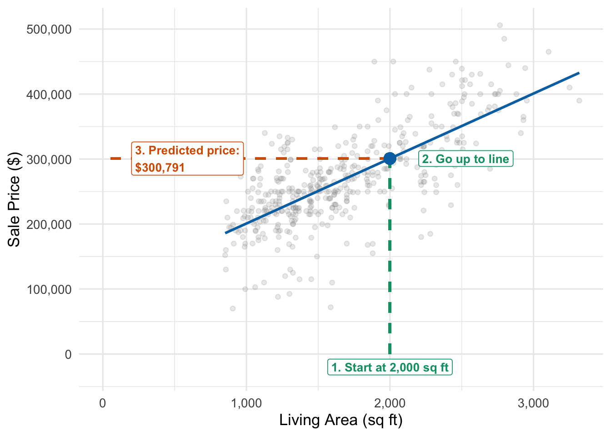
To make a prediction, we start at the x-value of interest on the horizontal axis, move vertically up to the regression line, then move horizontally to read off the predicted y-value. For a 2,000 sq ft home, our model predicts a sale price of approximately $300,791.
Of course, this is just a point prediction—our best single guess. In reality, homes of the same size sell for different prices due to other factors not captured by living area alone (location, condition, age, amenities, etc.). The actual sale price will likely differ from our prediction.
We can quantify the typical size of prediction errors using the residual standard error, which measures the standard deviation of the residuals:
Definition 21.3 (The residual standard error)
Definition 21.3
The residual standard error \(s_e\) is our estimate of \(\sigma\), the standard deviation of the errors \(\epsilon_i\) in the regression model. Recall that the model assumes:
\[y_i = \beta_0 + \beta_1 x_i + \epsilon_i, \quad \epsilon_i \sim N(0, \sigma^2)\]
The parameter \(\sigma\) tells us how much variation there is in Y that is still unpredictable after we account for the (linear) effect of \(x\). We estimate it using:
\[s_e = \sqrt{\frac{1}{n-2}\sum_{i=1}^n e_i^2}\]
We divide by \(n-2\) rather than \(n\) because we’ve used the data to estimate two parameters (\(\hat\beta_0\) and \(\hat\beta_1\)), which slightly reduces the effective sample size for estimating variability. This is analogous to using \(n-1\) when computing the sample standard deviation. This isn’t a number you will compute by hand, so you don’t need to worry about it.
NoteThree kinds of typical error
We have several different notions of “typical error” up to this point, so let’s pause and remind ourselves what they are:
- A standard deviation is the typical departure of a variable from its mean.
- A standard error is the typical size of an estimation error: how far a statistic like \(\bar{x}\) or \(\hat\beta_1\) tends to be from the true value (parameter) it estimates. It’s a special kind of standard deviation: the standard deviation we get from computing the statistic across repeated random samples
- A residual standard error is the typical size of a prediction error: how far outcomes land from the model’s predictions. A standard error shrinks toward zero as \(n\) grows, because estimates improve with more data. The residual standard error does not, because more data doesn’t make individual sale prices any less variable.
For our data, \[s_e = \$49{,}443\] The residual standard error of $49,443 tells us that predictions are typically off by about this amount. A rough 95% prediction interval for a new home with 2,000 sq ft is:
\[\widehat{\text{price}} \pm 2 s_e = 300{,}791 \pm 2 \times 49{,}443 = (\$201{,}905\text{, } \$399{,}677)\]
This interval captures the natural variation in prices around the regression line. We expect most homes — specifically, 95% of homes — with 2,000 sq ft to have sale prices in this range.
Technical detail 21.2: More precise prediction intervals
The interval \(\widehat{y} \pm 2s_e\) is a useful approximation, but it doesn’t account for uncertainty in estimating the regression line itself (we estimated \(\hat\beta_0\) and \(\hat\beta_1\) from a sample, after all). A more precise prediction interval accounts for both sources of uncertainty:
- Uncertainty in the regression line (the standard errors of \(\hat\beta_0\) and \(\hat\beta_1\))
- Natural variation in Y around the regression line (measured by \(s_e\))
Using this more careful calculation, a 95% prediction interval for our 2,000 sq ft home is ($203,473, $398,126). This is almost identical to our rough interval (in fact slightly narrower, because of small adjustments for accuracy that software makes). Generally speaking, unless the variability of the residuals is small (or the sample size is small) uncertainty due to estimating the coefficients is swamped by the variability in the residuals (errors). Statistical software typically computes these more precise intervals automatically.
WarningExtrapolation
Be cautious when making predictions for x-values outside the range of your data. The linear relationship we observed might not hold beyond the observed range. For example, predicting prices for a 10,000 sq ft mansion using a model fit to 850–3,300 sq ft homes would be unreliable—the price-per-square-foot relationship might be quite different for luxury properties.
Exercise 21.6: Making predictions
A coffee shop chain models daily revenue (in dollars) based on customer traffic:
\[\widehat{\text{revenue}} = 120 + 8.50 \times \text{customers}\]
The model has residual standard error \(s_e = \$185\).
Predict revenue for a day with 150 customers.
Construct an approximate 95% prediction interval for revenue on a day with 150 customers.
The manager observes that across 50 days where the shop saw 200 customers, the lowest observed revenue was $1,500. Does this suggest a problem with the model? Explain.
Solution
1. Point prediction: \[\widehat{\text{revenue}} = 120 + 8.50 \times 150 = \$1{,}395\]
2. Approximate 95% prediction interval: \[\widehat{\text{revenue}} \pm 2s_e = 1{,}395 \pm 2(185) = 1{,}395 \pm 370 = [\$1{,}025, \$1{,}765]\]
We expect 95% of days with 150 customers to have revenue between $1,025 and $1,765.
3. Range of outcomes: \[\widehat{\text{revenue}} = 120 + 8.50 \times 200 = \$1{,}820\]
so our model says on days with 200 customers revenue should follow a \(N(1820, 185^2)\) distribution. The most extreme observed outcome is the $1,500 day, which has a z-score of \((1500-1820)/185 = -1.73\) (about 1.7 residual standard errors below the predicted value). If the model fits well, the probability of a day with a z-score of -1.73 or lower is about 0.042, or one in 25. Across 50 days we’d expect about two days that low, so a lowest day of $1,500 isn’t surprising at all.
Exercise 21.7: Understanding prediction uncertainty
An e-commerce company models weekly shipping costs (in thousands of dollars) based on order volume (in thousands):
\[\widehat{\text{shipping}} = 2.5 + 0.85 \times \text{orders}\]
The model has residual standard error \(s_e = 1.2\) thousand dollars.
Next week, the company expects 40,000 orders. What are the predicted shipping costs?
Construct an approximate 95% prediction interval for next week’s shipping costs.
The CFO wants to budget for shipping. Should she budget for the point prediction or the upper end of the prediction interval? Explain your reasoning.
If actual shipping costs next week turn out to be $38,500, would this be surprising? Explain using the prediction interval.
Solution
1. Point prediction: \[\widehat{\text{shipping}} = 2.5 + 0.85 \times 40 = 36.5 \text{ thousand} = \$36{,}500\]
2. Approximate 95% prediction interval: \[36.5 \pm 2(1.2) = 36.5 \pm 2.4 = [34.1, 38.9] \text{ thousand}\]
Or $34,100 to $38,900.
3. Budgeting decision:
The CFO should budget closer to the upper end of the prediction interval ($38,900 or slightly higher) rather than the point prediction. Here’s why:
- Budgeting at the point prediction ($36,500) means there’s about a 50% chance actual costs will exceed the budget
- Budgeting at the upper end provides a buffer for the natural variation in shipping costs—about 97.5% of weeks should come in under this amount
- If running short and scrambling for emergency funds costs more than holding a small surplus, it’s better to budget high
We could do a more formal decision analysis here by considering the cost to over-budgeting (e.g. the opportunity cost of sticking that money in a mattress) but the logic is the same.
4. Would $38,500 be surprising?
No, $38,500 would not be surprising. This value falls within our 95% prediction interval [$34,100, $38,900]. While it’s at the high end (about $2,000 above the predicted value), it’s well within the range of typical week-to-week variation captured by our model. Its z-score is \((38.5 - 36.5)/1.2 \approx 1.7\), so we’d expect to see costs this high (or higher) in about 5% of weeks.
21.3.3 Use 3: Measuring the strength of the linear relationship
Beyond summarizing trends and making predictions, we often want to know: How strong is the linear relationship between X and Y? Does knowing X substantially improve our predictions in a linear model, or does it help only a little? To answer this, we’ll compare prediction errors from two models: one that ignores X entirely, and one that uses X via linear regression.
21.3.3.1 Predictions without X: Using the mean
If we didn’t know a home’s living area, what would be our best prediction for its price? The mean price \(\bar{y}\) minimizes the average squared prediction error among all constant predictions. Let’s visualize this:
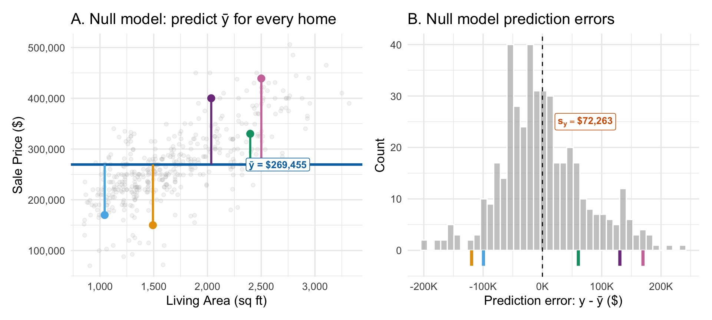
We’ll call predicting \(\bar{y}\) for every home the null model. It’s a simple regression model where we force the slope to be zero, so it aligns with the null hypothesis that \(\beta_1 = 0\) — no linear relationship. In the null model our prediction errors have standard deviation equal to \(s_y\), the sample standard deviation of the prices themselves, since they are just the original values with \(\bar y = \$269{,}455\) subtracted off. This is the baseline level of uncertainty about prices when we ignore living area.
21.3.3.2 Predictions with X: Using the regression line
Now let’s use the estimated regression line to make predictions:
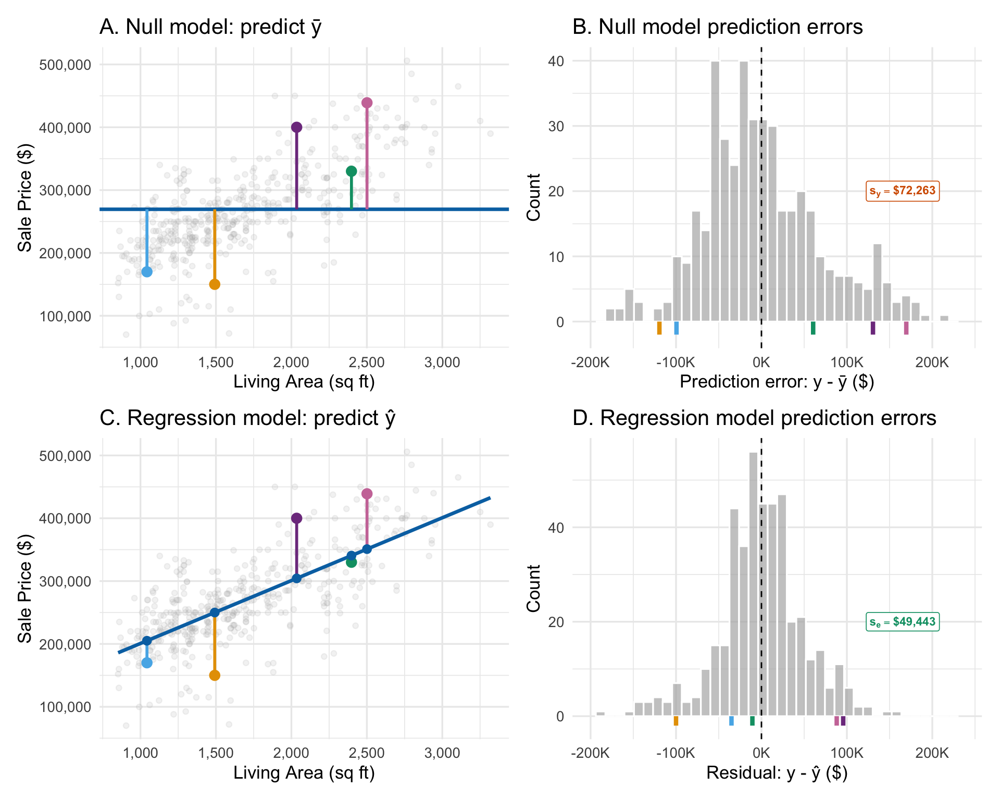
When X is useful for predicting Y, the residuals from the regression model are smaller than the residuals from the null model (that just predicts the mean of \(y\) for every size), at least on average. The histogram of residuals is narrower, indicating more precise predictions. The bigger the reduction in error variability, the stronger the linear relationship is between \(x\) and \(y\). The spread of the residuals in the simple linear regression model is measured by \(s_e\), the residual standard error.
21.3.3.3 Quantifying the improvement in predictive power: \(R^2\)
Definition 21.4 (\(R^2\))
Definition 21.4
We can summarize the improvement using \(R^2\) (R-squared), which measures the proportion of variation in Y explained by the linear relationship with X:
\[R^2 = 1 - \frac{\text{variance of residuals}}{\text{variance of } y} = 0.533\]
In our example, \(R^2 = 0.533\), meaning that 53.3% of the variation in house prices is explained by the linear relationship with living area. Put another way, using area to predict price reduces our prediction variance by 53.3% compared to just predicting the mean price for everyone.
An \(R^2\) of 0.53 is an improvement over predicting the average price for every home — about half the variability in prices is predictable using size — but it is a relative measure: it doesn’t tell us how big our errors tend to be. The residual standard error does. Predicting the average price for every home, our predictions are typically off by $72,263 (\(s_y\)). Using living area, they’re typically off by $49,443 (\(s_e\)). Even so, a rough 95% prediction interval from the line is still about ±$99,000: for a 2,000 sq ft home, from $202,000 to $400,000. That range is too wide to set a listing price or decide what to offer on a house. For those decisions we need more information than size alone.
Regression tables report two versions of \(R^2\), as in Table 21.1. If we plug the residual standard error \(s_e\), with its \(n-2\) divisor, into the formula above, we get adjusted \(R^2\) (0.532 here). Computing both variances with the same divisor gives \(R^2\) (0.533). The difference is bookkeeping, and it only matters when the sample is small relative to the number of estimated coefficients.
\(R^2\) ranges from 0 to 1:
- \(R^2\) = 0 means X provides no linear information about Y (the regression line is no better than predicting \(\bar{y}\) for everyone)
- \(R^2\) = 1 means perfect linear fit (all points lie exactly on the line). It doesn’t matter if the relationship is positive or negative.
21.3.3.4 Other interpretations of \(R^2\)
\(R^2\) has two other useful interpretations:
\(R^2\) equals the squared correlation between \(X\) and \(Y\): \(R^2 = \text{cor}(x,y)^2 = 0.533\). This is a pure measure of linear association that doesn’t depend on which variable we call X or Y, or on the direction (sign) of the relationship.
\(R^2\) equals the squared correlation between fitted and observed values: \(R^2 = \text{cor}(\hat{y}, y)^2\). This measures how closely the predicted values track the actual values—when predictions closely match reality, \(R^2\) is high.
Because \(R^2\) is a squared correlation, it inherits the limits of correlation. A single extreme observation can manufacture or hide a strong linear relationship, as in Anscombe’s quartet. And a low \(R^2\) can hide a strong nonlinear relationship, like the one between electricity load and temperature.
Tip 21.3: Interpreting \(R^2\)
- \(R^2\) measures the proportion of variance explained by the linear relationship; “explained” here really means “predicted”. Predicting a home’s size from its price gives exactly the same \(R^2\), but nobody would say that price explains size.
- \(R^2\) = 0.65 means knowing X reduces prediction variance (uncertainty) by 65% relative to the prediction variance if we didn’t use X. But even if \(R^2\) is high, if there is a lot of variability in Y we might still have a lot of prediction uncertainty left after incorporating X (like in the house prices example, where the RSE — the typical prediction error — is $49,443, while nearly all sales are between $100K and $450K).
- \(R^2\) alone doesn’t tell you if the relationship is practically important—a practically important relationship can have modest \(R^2\).
- High \(R^2\) means the predictions of the linear model closely track the observed values of Y, and that X and Y are highly correlated — but not necessarily that the relationship is truly linear.
21.3.3.5 Weak but real relationships
A low \(R^2\) does not mean that \(x\) and \(y\) are unrelated. Return to the course evaluations in Figure 21.7.
The regression of evaluation on beauty has \(R^2 =\) 0.036, so the line predicts only 3.6% of the variation in evaluations. Knowing an instructor’s beauty rating barely changes how far off our predictions typically are: 0.555 evaluation points without it (\(s_y\)) and 0.545 with it (\(s_e\)). But the 95% confidence interval for the slope is (0.07, 0.20) evaluation points per unit of beauty, and it excludes zero; the t-statistic is 4.1. The data give strong evidence of a weak linear relationship. The weak relationship is expected: factors like how clearly the instructor explains the material or how fairly they grade are almost surely more important for course evaluations, and unrelated to the instructor’s appearance. In this model the impact of all of those factors end up in the residuals, increasing their spread.
WarningA low \(R^2\) does not rule out a linear relationship
Whether there is a linear relationship is a question about the slope: is zero a plausible value for \(\beta_1\), given the data? Answer it with a confidence interval or test for the slope, not with \(R^2\). \(R^2\) measures how much of the variation in \(y\) the line predicts, and a real linear relationship can predict very little of it.
Exercise 21.8: Comparing model fit
A business consultant analyzes three different relationships:
Model 1 (Sales vs Advertising): \(R^2 = 0.82\), \(s_e = \$45{,}000\)
Model 2 (Revenue vs Store Size): \(R^2 = 0.45\), \(s_e = \$95{,}000\)
Model 3 (Customer Satisfaction vs Wait Time): \(R^2 = 0.91\), \(s_e = 8\) points
where \(s_e\) is the residual standard error—the typical size of prediction errors.
What does \(R^2 = 0.82\) tell us about the relationship between sales and advertising in Model 1?
Assuming all three relationships are truly linear, which has the strongest linear relationship? How do you know?
The CEO is disappointed with Model 2’s \(R^2 = 0.45\) and wants to discard it. Give one reason why this might be the wrong decision.
Solution
1. Interpretation of Model 1:
\(R^2 = 0.82\) means that 82% of the variation in sales is explained (can be predicted) using the linear relationship with advertising. If the relationship is in the expected direction, the correlation is about \(\sqrt{0.82}\approx 0.91\).
2. Strongest relationship:
Model 3 (Customer Satisfaction vs Wait Time) has the strongest linear relationship with \(R^2 = 0.91\).
3. Why not to discard Model 2:
Even with \(R^2 = 0.45\), Model 2 could still be useful for prediction. The residual standard error of $95,000 tells us the typical size of prediction errors. If that level of precision is useful for business decisions—for example, if knowing revenue within roughly ±$190,000 (about \(\pm 2s_e\)) helps with budgeting or planning—then the model has value. The moderate \(R^2\) simply tells us that store size isn’t the only important factor, which is itself useful information for management.
Exercise 21.9: Understanding \(R^2\) in context
A logistics company fits a regression model predicting weekly delivery costs (in thousands of dollars) from the number of shipments:
\[\widehat{\text{cost}} = 8.5 + 0.045 \times \text{shipments}\]
The model has \(R^2 = 0.77\) and \(s_e = \$3{,}200\), where \(s_e\) is the residual standard error and \(s_y = \$6{,}700\) is the standard deviation of weekly costs (what the typical prediction error would be if we just predicted the mean cost every week).
What does \(R^2 = 0.77\) tell us about the relationship between shipments and delivery costs?
The operations manager says “Our model is 77% accurate.” Is this a correct interpretation of \(R^2\)? If not, provide a better interpretation.
The company’s CFO says “An \(R^2\) of 0.77 seems low—I don’t want forecasts of costs that are off by more than $7,000 very often.” Using the residual standard error, do you think the current model is useful enough, or should they pursue a higher \(R^2\) as suggested?
How much smaller is the typical prediction error when we use shipments than when we predict the average cost every week?
Solution
1. Interpretation of \(R^2 = 0.77\):
The model explains 77% of the variation in weekly delivery costs across different shipment volumes. Using the number of shipments to predict costs reduces our prediction variance by 77% compared to just predicting the mean cost for every week.
2. Better interpretation of “accuracy”:
The “77% accurate” phrasing is misleading. \(R^2\) doesn’t mean predictions are 77% of the true value or correct 77% of the time. Better interpretations:
- “The model explains 77% of the variation in costs”
- “Using shipment volume to predict costs reduces prediction variance by 77%”
- “Shipment volume predicts 77% of the week-to-week variation in costs”
The residual standard error (\(s_e = \$3{,}200\)) provides a more direct measure of prediction accuracy—predictions are typically off by about $3,200 in either direction.
3. Is the current model useful enough?
The current model appears quite useful for the CFO’s purposes — 7,000 is over two residual standard errors, so we should only make mistakes that large less than 5% of the time. The CFO is making the same mistake as in part 2 — if we care about the size of absolute prediction errors, we should look at the residual standard error, not \(R^2\).
4. Typical prediction error:
Predicting the average cost every week, our predictions would typically be off by $6,700 (\(s_y\)). Using shipments, they’re typically off by $3,200 (\(s_e\)), so the typical error is $3,500 smaller.
21.3.4 Use 4: Making adjusted comparisons
A fourth application of regression is to make “apples-to-apples” comparisons between observations with different values of the \(X\) variable. Residuals tell us how much higher or lower an outcome is than we’d expect given the explanatory variable.
Here’s a question a builder or a buyer might ask: do two-story homes sell for more than one-story homes? In our data, the 154 two-story homes sold for $300,700 on average, compared to $252,500 for the 284 one-story homes — about $48,200 more.
That comparison isn’t apples-to-apples. The two-story homes are much bigger: their average living area is 2,090 sq ft, compared to 1,468 sq ft for one-story homes. We already know that bigger homes sell for more, so some or all of the raw difference could just be size. The left panel of Figure 21.11 marks each home’s number of stories on our scatterplot; the right panel shows each home’s residual from the fitted line.
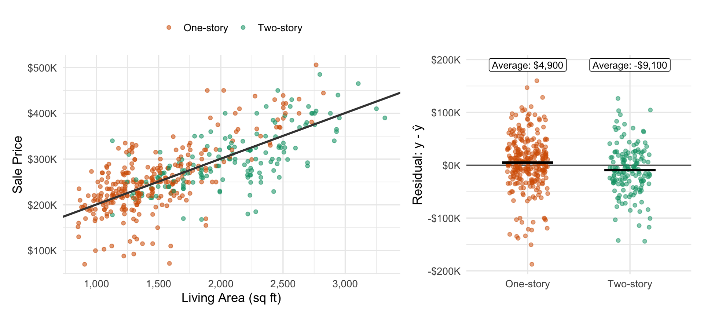
Residuals put the two groups on an equal footing. A home’s residual is how much more or less it sold for than the line predicts for a home of its size. Averaging the residuals within each group, one-story homes sold for about $4,900 more than predicted, and two-story homes for about $9,100 less. So comparing homes of the same size, two-story homes sold for about $14,000 less on average. The raw gap gives the same answer once we take out size: two-story homes average 622 more square feet, which adds 622 × $100 = $62,200 to their predicted price, and $48,200 − $62,200 = −$14,000. The raw premium was size, and then some.
This is a comparison of homes of the same size, not a claim about what would happen if you added a second story to a house. It tells us what buyers in this ZIP code paid, on average, for two-story homes compared to one-story homes with the same living area.
Size isn’t the only way the two groups differ. The two-story homes are also newer (a median age of 9.5 years versus 24), and they have more bathrooms (3.0 versus 2.1 on average) and bedrooms (3.6 versus 3.1). A line in size alone can’t hold those fixed, so the residuals still mix them into the comparison. In the next chapter, multiple regression will let us compare homes that match on several characteristics at once.
This analysis reveals an important principle: residuals highlight observations that are unusual conditional on the explanatory variables in the model.
Tip 21.4: Residuals as adjusted comparisons
- A positive residual means the outcome is higher than expected given X
- A negative residual means the outcome is lower than expected given X
- Comparing residuals lets us make “X-adjusted” comparisons
- Averaging residuals within groups compares the groups at the same value of X
- Large residuals suggest important factors not captured by X alone
Data used in this section
- Austin House Listings supplies the sale prices, living areas, and locations of the 438 homes.
- Course Evaluations and Instructor Appearance supplies the course evaluations and beauty ratings.